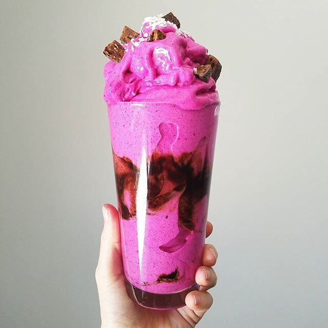

Pretty in Pink Smoothie (vegan, gluten free)

Soo sorry it's been a while since I've posted on the blog! I've still been posting on Instagram and Youtube, but I recently moved and it's been hard to keep up with everything! Been trying though :) I'd say I've done an okay job, yes?
First things first, I had to break in the new place with banana ice cream! Technically, it's a smoothie I suppose. Whichever you prefer. :p This pretty in pink smoothie is sooo refreshing and BRIGHT! And it's only TWO ingredients! Super healthy, vegan, gluten free, and refined sugar free, woohoo. I used pitaya in this for the bright color, which is frozen dragon fruit! It has a more tangy taste to it than bananas do, so it adds a great flavor that really wakes you up. If you've ever had an acai bowl, it's comparable to that!
I think this flavor goes perfectly with chocolate. I mean, what doesn't go with chocolate? I've been loving this cocoa stevia syrup on ice cream, oatmeal, and pancakes. Have you used it before? What's your favorite way to use it? And if you haven't tried it, I highly recommend it! I also used chocolate square bars and just a wee lil shredded coconut for texture.
Back on the topic of the move, all things considered, I think it went well! Could've been worse with a small stairway and 2 flights of stairs...but I had very very kind friends that helped. There's marble countertops. So basically I'm living the dream.
If you're wondering why I moved...once again...for the *counts*...5th time in 10 months...well. This will be the last move for the next 12 months (and maybe more!). January is when I came back from Washington state, and the easiest way for me to pick things back up as quick as possible and figure out my situation was to just move back in with my mom for a bit. Now that I've got a comfortable situation, I know where I'm working, I have a roommate that wanted to live in the same area...I moved! It cuts down on my commute a lot and now I don't have to tell people I live with my mom at age 24 (even though *fact alert* 32% of people ages 18-34 live with their parents still!). It just felt weird to me to have a job and income but not live independently. Soo I'm in the city region of Atlanta once again. Feels good to be back! I've lived semi in boxes, never fully unpacked, for 9 months and it feels good to be fully completely rid of them finally.
Try this recipe out and let me know what you think of pitaya. :) I'm a fan and prefer it over acai!
Pretty in Pink Smoothie
-
4 frozen bananas, chopped
-
1 packet (100g) pitaya plus smoothie pack
-
2-3 TBSP water (Optional)
Blend all of your ingredients in a food processor. You could also use a high speed blend for this, but I just love my food processor! You can use the water for a thinner, more drinkable type of smoothie, or omit the water if you want a thick, ice-cream like texture!